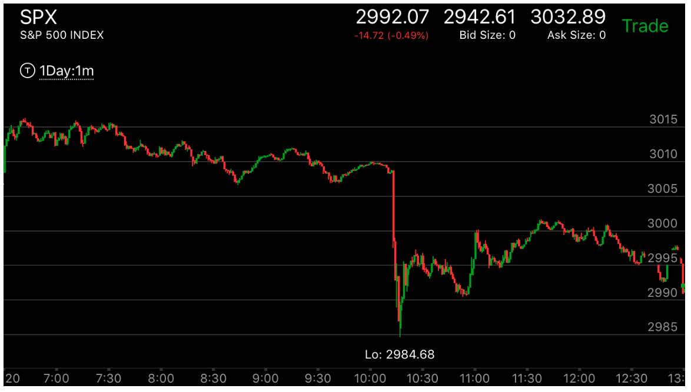
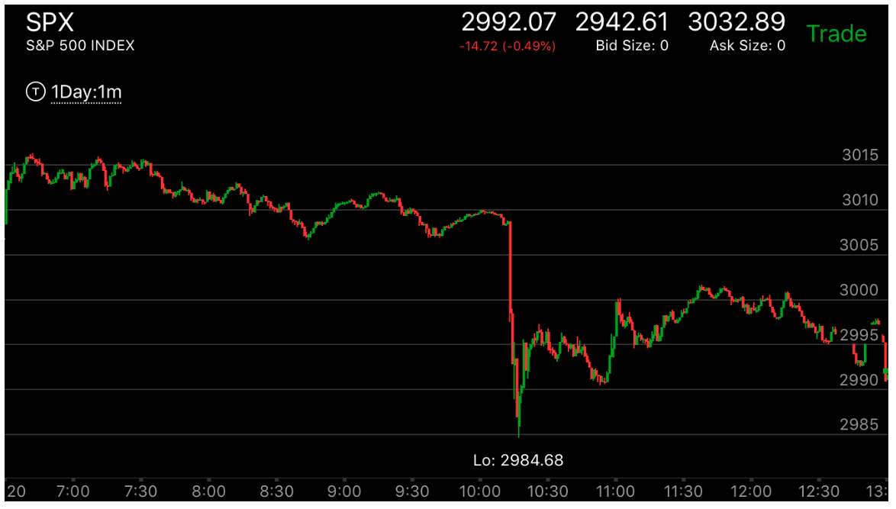

利用走平点形成加速的几种方式
- 反向走势加速1：它可以一次越过主要走势的走平点，然后走平。这样就完成了加速。
- 反向走势加速2：它可以停留在反向走势的走平点。这样它会持续前进，然后它本身出现了加速或者两段走势。再次反转。
- 反转的时候，它的第一浪会出现走平继续运动的方式，然后反向运动。越过走平点。这样形成了加速。有时，这种越过非常缓慢，
但是也是加速走势。
- 反转的时候，主要走势自己形成一个走平点，然后拉回，再次越过这个走平点，形成了加速。然后反转了。相当于自己给自己下个陷阱，
自己掉进去。反转了。

图示：这个就是一个自己设陷阱，自己掉进去的例子。它处于跌势，可以看到它开盘后，下跌的时候，
一直都没有任何加速每次创新低的时候，都要停留一下。但是在8:00它走平了10分钟，然后冲高，8：20开始连续下跌。越过走平点，
仍然不停额下跌。这样就形成了加速走势。大盘反转了。
 

图示：大盘在开盘后，经过加速，形成了反转，处于跌势。它在8：45创新低后，立刻反弹。
可以看到它在前面下跌的走平点附近，3008，也开始走平。表示这个不是加速。走平后，再次上涨，幅度很大，
但是因为是走平上涨，不能算加速。也不能算两段走势。9：00走平几分钟，拉回，它再次大冲，走平。这个相当于
越过了自己的走平点。形成了加速。开始反转了。它的反转应该低于走势的起点。结果它在9：40不到起点，就反弹了。说明未来一定低于这个
点。结果它的选择是暴跌。

图示：8：40它出现了反转的第一浪，为了这个第一浪确认一下，它走平后，继续前进。
显然这个不会让它反转，因为前进的幅度很小。它在8：50开始反弹，越过了前面的走平点，虽然很慢，也形成了加速。